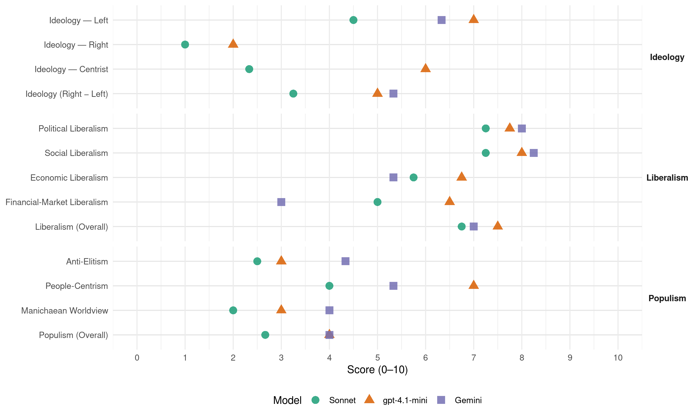

SD (Slovenia, 2018)
manifesto_id 97322_201806
Get full text: This site shows derived annotations and short verbatim quotes only. The full manifesto text is © Manifesto Project / WZB — obtain it via manifesto-project.wzb.eu using the manifesto_id above.
Headline scores
| Dimension | Sonnet | gpt-4.1-mini | Gemini |
|---|---|---|---|
| Populism (Overall) | 2.7 | 4.0 | 4.0 |
| Anti-Elitism | 2.5 | 3.0 | 4.3 |
| People-Centrism | 4.0 | 7.0 | 5.3 |
| Manichaean Worldview | 2.0 | 3.0 | 4.0 |
| Ideology (Right − Left) | 3.2 | 5.0 | 5.3 |
| Liberalism (Overall) | 6.8 | 7.5 | 7.0 |
| Political Liberalism | 7.2 | 7.8 | 8.0 |
| Social Liberalism | 7.2 | 8.0 | 8.2 |
| Economic Liberalism | 5.8 | 6.8 | 5.3 |
| Financial-Market Liberalism | 5.0 | 6.5 | 3.0 |
Evidence per dimension
Economic Liberalism
Gemini · score 5.0 · verified · chunk 1
“odprto, inovativno gospodarstvo”
javna infrastruktura, kultura). Uspemo lahko zgolj kot odprto, inovativno gospodarstvo. Ključno je vključujoče
Gemini · score 5.0 · verified · chunk 2
“zmanjševanje administrativnih ovir in večja”
investicij, zmanjševanje administrativnih ovir in večja učinkovitost upravnih procesov
Gemini · score 6.0 · verified · chunk 3
“razvoju mednarodne trgovine in mednarodnega”
Slovenija spreminja svet: Podpora razvoju mednarodne trgovine in mednarodnega sodelovanja kot najboljšima načinoma
gpt-4.1-mini · score 7.0 · verified · chunk 1
“Podpirali bomo investiranje v nove tehnologije in v nova znanja”
Podpirali bomo investiranje v nove tehnologije in v nova znanja, nove poslovne in ekonomske modele, kot so sodelo, souporaba, ekonomska demokracija. Z digitalizacijo bomo poskrbeli za razvoj inovativnosti in podjetništva, državljanom pa omogočili boljše javne storitve.
gpt-4.1-mini · score 7.0 · verified · chunk 2
“Spodbujanje podjetij, še posebej malih in srednjih, k večji internacionalizaciji”
Ukrepi:Spodbujanje podjetij, še posebej malih in srednjih, k večji internacionalizaciji, skupnemu nastopu na novih trgih, razvoju novih storitev in produktov, sejemskih nastopih. Krepitev izvozne dejavnosti podjetij, načrten in skupen pristop k osvajanju novih trgov.
gpt-4.1-mini · score 7.0 · verified · chunk 3
“gospodarstvo v naslednjem srednjeročnem obdobju realno rastlo v povprečju za dobra dva in pol odstotka letno”
Tako domače kot mednarodne institucije napovedujejo, da bo gospodarstvo v naslednjem srednjeročnem obdobju realno rastlo v povprečju za dobra dva in pol odstotka letno. To pomeni, da se bo dejanski bruto domači proizvod gibal okoli potencialnega oziroma bo celo nekoliko nad njim.
gpt-4.1-mini · score 6.0 · verified · chunk 4
“spodbujali procese povezovanja gospodarstva iz Slovenije in zamejstva”
Z ukrepi ekonomske politike in s sredstvi EU bomo spodbujali procese povezovanja gospodarstva iz Slovenije in zamejstva ter vanje dejavno vključevali tudi Slovence po svetu Posebno pozornost bomo namenili novemu valu izseljencev, ki v tujino odhajajo zaradi boljših možnosti za osebno rast, obenem pa želijo ohraniti stik s Slovenijo, ter odpravili ovire za njihovo vračanje, prav tako pa bomo odpravili ovire za vračanje vseh drugih generacij izseljencev in zdomcev.
Sonnet · score 5.0 · verified · chunk 1
“Uspemo lahko zgolj kot odprto, inovativno gospodarstvo”
Javne storitve so ključ za vključujoč razvoj in enake možnosti vseh. Uspemo lahko zgolj kot odprto, inovativno gospodarstvo. Ključno je vključujoče delovanje.
Sonnet · score 6.0 · verified · chunk 2
“odpravljanje birokratskih ovir za mikro, mala in srednja podjetja”
Odpravljanje birokratskih ovir za mikro, mala in srednja podjetja ter za razvoj inovativnih zagonskih (startup) podjetij
Sonnet · score 6.0 · verified · chunk 3
“konkurenčnosti gospodarstva in povečuje investicijske aktivnosti”
Učinkovito prostorsko načrtovanje lahko prispeva k poenostavitvi postopkov pridobivanja dovoljenj za posege v prostor ter izboljša konkurenčnosti gospodarstva in povečuje investicijske aktivnosti
Sonnet · score 6.0 · verified · chunk 4
“spodbujali procese povezovanja gospodarstva”
Z ukrepi ekonomske politike in s sredstvi EU bomo spodbujali procese povezovanja gospodarstva iz Slovenije in zamejstva
Financial-Market Liberalism
Gemini · score 3.0 · verified · chunk 1
“Sanacija bančne luknje je povzročila”
narasle so socialne razlike in neenakost. Sanacija bančne luknje je povzročila skokovito rast javnega dolga.
Gemini · score 3.0 · verified · chunk 2
“preoblikovanja v založniško zadrugo”
državno lastništvo z modelom postopnega preoblikovanja v založniško zadrugo.
gpt-4.1-mini · score 6.0 · verified · chunk 1
“Vzdržne in stabilne javne finance, s programskim proračunom poskrbeli za optimizacijo porabe”
Poskrbeli bomo za vzdržne in stabilne javne finance, s programskim proračunom poskrbeli za optimizacijo porabe javnega denarja za najboljše možne učinke, z javnimi vlaganji in partnerstvi pa poskrbeli za kakovost naše javne infrastrukture.
gpt-4.1-mini · score 7.0 · verified · chunk 2
“Z ustrezno zastavljeno strategijo Slovenskega državnega holdinga bomo dosegli pogoje, da se kreditna aktivnost v Sloveniji sprosti”
Ukrepi:▪ Z ustrezno zastavljeno strategijo Slovenskega državnega holdinga bomo dosegli pogoje, da se kreditna aktivnost v Sloveniji sprosti in bistveno poveča na način, da bodo bančni krediti ustrezno zavarovani in plasirani za izvedbo projektov, ki bodo omogočali vračilo izposojenih sredstev v predvidenem roku.
Sonnet · score 4.0 · verified · chunk 1
“Sanacija bančne luknje je povzročila skokovito rast javnega dolga”
Sanacija bančne luknje je povzročila skokovito rast javnega dolga. Zaradi tega so bili narejeni boleči rezi v sredstva za socialno zaščito
Sonnet · score 5.0 · mixed · chunk 2
“bančništvo regulirati in ga nadzorovati”
Zaradi njegovega pomena na delovanje vseh družbenih podsistemov motnje v delovanju bančnega sistema predstavljajo sistemsko tveganje. Zato je treba bančništvo regulirati in ga nadzorovati
Sonnet · score 6.0 · verified · chunk 3
“upravljanja kapitalskih naložb je končno vzpostavljena”
S sprejeto strategijo upravljanja kapitalskih naložb je končno vzpostavljena lastniška politika države
Political Liberalism
Gemini · score 8.0 · verified · chunk 1
“demokracije, vladavine prava, svobode”
da ta zagotovi ljudem več varnosti, demokracije, vladavine prava, svobode in enakosti, človeškega dostojanstva
Gemini · score 8.0 · verified · chunk 2
“najpomembnejših institucij demokratične države”
podpirali javno radiotelevizijo kot eno najpomembnejših institucij demokratične države. Spodbujali bomo
Gemini · score 8.0 · verified · chunk 3
“pravna država in vladavina prava”
delovanje pravosodnega sistema Pravna država in vladavina prava sta med vrhovnimi vrednotami
Gemini · score 8.0 · verified · chunk 4
“varovanja človekovih pravic in temeljnih svoboščin”
ekonomske upravičenosti, varovanja človekovih pravic in temeljnih svoboščin. Povečanje zavedanja javnosti
gpt-4.1-mini · score 8.0 · verified · chunk 1
“Okrepiti želimo sposobnost države, vlade in institucij”
Okrepiti želimo sposobnost države, vlade in institucij, da bi uresničili pričakovanja ljudi. Da državljankam in državljanom zagotovimo varnost v vseh življenjskih obdobjih in okoliščinah.
gpt-4.1-mini · score 8.0 · verified · chunk 2
“zagotovili bomo pogoje za neodvisno, profesionalno in kakovostno novinarstvo”
Ukrepi:Zagotovili bomo pogoje za neodvisno, profesionalno in kakovostno novinarstvo, ki bo temeljilo na etiki javne besede ter boju proti lažnim novicam in sovražnemu govoru. Nadgradili bomo sistem javnofinančne podpore medijem, ki delujejo v javnem interesu.
gpt-4.1-mini · score 8.0 · verified · chunk 3
“Zaupanje vanju je ključno za delovanje in vse vidike družbenega življenja”
Pravna država in vladavina prava sta med vrhovnimi vrednotami vsake omikane družbe. Zaupanje vanju je ključno za delovanje in vse vidike družbenega življenja: za spoštovanje pravic in svoboščin, delovanje države, priznanje za uspehe, možnost za rast, rešitev sporov in enake možnosti.
gpt-4.1-mini · score 7.0 · verified · chunk 4
“spoštovali posebne pravice narodnih in etničnih skupnosti v Sloveniji”
Socialni demokrati se zavzemajo za večkulturno sožitje, saj različne kulture vsako demokratično družbo samo bogatijo, zato bomo še naprej dosledno spoštovali posebne pravice narodnih in etničnih skupnosti v Sloveniji, ki so določene z ustavo in zakoni. Ukrepi:Optimizirali bomo delo Urada za narodnosti tako, da bo dejansko postal koordinator vseh ukrepov, ki so neposredno povezani s položajem italijanske in madžarske narodne skupnosti ter še posebej romske etnične skupnosti.
Sonnet · score 7.0 · verified · chunk 1
“več varnosti, demokracije, vladavine prava, svobode”
Ali dovolj aktivno skrbimo za uspeh evropskega projekta, da ta zagotovi ljudem več varnosti, demokracije, vladavine prava, svobode in enakosti
Sonnet · score 8.0 · verified · chunk 2
“javno radiotelevizijo kot eno najpomembnejših institucij demokratične države”
bomo vsestransko podpirali javno radiotelevizijo kot eno najpomembnejših institucij demokratične države. Spodbujali bomo medijsko vzgojo
Sonnet · score 7.0 · verified · chunk 3
“demokratičnimi, transparentnimi, odgovornimi institucijami”
Prizadevanja za močno unijo z demokratičnimi, transparentnimi, odgovornimi institucijami
Sonnet · score 7.0 · verified · chunk 4
“varovanja človekovih pravic in temeljnih svoboščin”
v luči zagotavljanja varnosti in ekonomske upravičenosti, varovanja človekovih pravic in temeljnih svoboščin
Liberalism (Overall)
Gemini · score 6.0 · verified · chunk 1
“demokracije, vladavine prava, svobode”
da ta zagotovi ljudem več varnosti, demokracije, vladavine prava, svobode in enakosti, človeškega dostojanstva
Gemini · score 6.0 · verified · chunk 2
“najpomembnejših institucij demokratične države”
podpirali javno radiotelevizijo kot eno najpomembnejših institucij demokratične države. Spodbujali bomo
Gemini · score 7.0 · verified · chunk 3
“pravna država in vladavina prava”
delovanje pravosodnega sistema Pravna država in vladavina prava sta med vrhovnimi vrednotami
Gemini · score 9.0 · verified · chunk 4
“varovanja človekovih pravic in temeljnih svoboščin”
ekonomske upravičenosti, varovanja človekovih pravic in temeljnih svoboščin. Povečanje zavedanja javnosti
gpt-4.1-mini · score 7.0 · verified · chunk 1
“Okrepiti želimo sposobnost države, vlade in institucij”
Okrepiti želimo sposobnost države, vlade in institucij, da bi uresničili pričakovanja ljudi. Da državljankam in državljanom zagotovimo varnost v vseh življenjskih obdobjih in okoliščinah.
gpt-4.1-mini · score 8.0 · verified · chunk 2
“zagotovili bomo pogoje za neodvisno, profesionalno in kakovostno novinarstvo”
Ukrepi:Zagotovili bomo pogoje za neodvisno, profesionalno in kakovostno novinarstvo, ki bo temeljilo na etiki javne besede ter boju proti lažnim novicam in sovražnemu govoru. Nadgradili bomo sistem javnofinančne podpore medijem, ki delujejo v javnem interesu.
gpt-4.1-mini · score 8.0 · verified · chunk 3
“Zaupanje vanju je ključno za delovanje in vse vidike družbenega življenja”
Pravna država in vladavina prava sta med vrhovnimi vrednotami vsake omikane družbe. Zaupanje vanju je ključno za delovanje in vse vidike družbenega življenja: za spoštovanje pravic in svoboščin, delovanje države, priznanje za uspehe, možnost za rast, rešitev sporov in enake možnosti.
gpt-4.1-mini · score 7.0 · verified · chunk 4
“spoštovali posebne pravice narodnih in etničnih skupnosti v Sloveniji”
Socialni demokrati se zavzemajo za večkulturno sožitje, saj različne kulture vsako demokratično družbo samo bogatijo, zato bomo še naprej dosledno spoštovali posebne pravice narodnih in etničnih skupnosti v Sloveniji, ki so določene z ustavo in zakoni. Ukrepi:Optimizirali bomo delo Urada za narodnosti tako, da bo dejansko postal koordinator vseh ukrepov, ki so neposredno povezani s položajem italijanske in madžarske narodne skupnosti ter še posebej romske etnične skupnosti.
Sonnet · score 6.0 · verified · chunk 1
“več varnosti, demokracije, vladavine prava, svobode”
Ali dovolj aktivno skrbimo za uspeh evropskega projekta, da ta zagotovi ljudem več varnosti, demokracije, vladavine prava, svobode in enakosti
Sonnet · score 7.0 · verified · chunk 2
“svobodo umetniškega ustvarjanja”
Podprli bomo racionalizacijo in smiselno decentralizacijo mrež kulturnih institucij. Zaščitili bomo svobodo umetniškega ustvarjanja
Sonnet · score 7.0 · verified · chunk 3
“demokratičnimi, transparentnimi, odgovornimi institucijami”
Prizadevanja za močno unijo z demokratičnimi, transparentnimi, odgovornimi institucijami
Sonnet · score 7.0 · verified · chunk 4
“varovanja človekovih pravic in temeljnih svoboščin”
v luči zagotavljanja varnosti in ekonomske upravičenosti, varovanja človekovih pravic in temeljnih svoboščin
Anti-Elitism
Gemini · score 5.0 · verified · chunk 1
“občutek nepravičnosti in razširjenosti korupcije”
Med ljudmi se je krepil občutek nepravičnosti in razširjenosti korupcije. Kriza nas ni naredila močnejše
Gemini · score 4.0 · verified · chunk 2
“prevladuje uradniški in birokratski pogled”
razvojnih ukrepov pa prevladuje uradniški in birokratski pogled. Ne glede na bogato
Gemini · score 4.0 · verified · chunk 3
“ogrožajo različne interesne skupine”
prostorski razvoj velikokrat ogrožajo različne interesne skupine. 1. cilj: Varen in zdrav
gpt-4.1-mini · score 3.0 · verified · chunk 1
“Ljudje se počutijo ogoljufane”
Med ljudmi se je krepil občutek nepravičnosti in razširjenosti korupcije. Kriza nas ni naredila močnejše, ampak je ustvarila krč, ki je postal del družbene mentalitete. Močno je posegla v našo družbo in usodno zmanjšala zaupanje v demokracijo, v državo, v drug drugega. Ljudje se počutijo ogoljufane. Napovedi o izgubljenem desetletju – za državo in za njene ljudi - so se uresničile.
Sonnet · score 3.0 · verified · chunk 1
“Zdravstvo, ki ga ne obvladujejo lobiji”
Enak dostop do vseh oblik zdravljenja brez čakanja in brez privilegijev. Zdravstvo, ki ga ne obvladujejo lobiji, ampak človečnost!
Sonnet · score 3.0 · mixed · chunk 2
“brezobzirni korporativni kapitalizem”
ekonomske demokracije in zadružništva kot odgovor na brezobzirni korporativni kapitalizem. Poiskali bomo družbeno soglasje
Sonnet · score 2.0 · verified · chunk 3
“različne interesne skupine”
načrtni in premišljeni prostorski razvoj velikokrat ogrožajo različne interesne skupine
Ideology — Centrist
gpt-4.1-mini · score 6.0 · verified · chunk 1
“Napovedujemo samozavestno vodenje vlade”
Država, sposobna uresničiti priložnosti in aktivirati vse ustvarjalne sile ljudi, da skupaj poskrbimo za blaginjo, pravičnost, varnost in krepitev naših možnosti. Zato napovedujemo samozavestno vodenje vlade. Okrepili bomo vključenost vseh v procese odločanja, še posebej socialnega partnerstva in sodelovanja med generacijami.
Sonnet · score 2.0 · verified · chunk 1
“Delali bomo na tistem, kar nas združuje”
Okrepili bomo vključenost vseh v procese odločanja. Delali bomo na tistem, kar nas združuje. Motivirali bomo ustvarjalnost vseh v družbi.
Sonnet · score 3.0 · verified · chunk 2
“Vzpostavili bomo sisteme za ugotavljanje volje ljudstva”
Vpeljali bomo nove pristope za e-demokracijo. Vzpostavili bomo sisteme za ugotavljanje volje ljudstva in posledično ravnanje državnih organov
Sonnet · score 2.0 · verified · chunk 3
“uporabniku prijazen sistem komunikacije”
Digitalna država s povezavo vseh javnih storitev na enem mestu za uporabniku prijazen sistem komunikacije z državo
Ideology — Left
Gemini · score 7.0 · verified · chunk 1
“To je socialna demokracija”
za seboj puščamo svet boljši in lepši za vsakogar. To je socialna demokracija. Ideja o družbi, ki daje
Gemini · score 7.0 · verified · chunk 2
“odgovor na družbeno neenakost, ki”
To je tudi naš odgovor na družbeno neenakost, ki ga generira obstoječi kapitalistični
Gemini · score 5.0 · verified · chunk 3
“prednost pred ekonomskimi interesi kmetijskih”
kakovostne hrane mora zato imeti prednost pred ekonomskimi interesi kmetijskih pridelovalcev in industrije.
gpt-4.1-mini · score 7.0 · verified · chunk 1
“Pravična in dostopna socialna zaščita”
Odprave revščine se bomo lotili s sistemskimi ukrepi spodbujanja vključujoče gospodarske rasti, ustvarjanjem kakovostnih delovnih mest, z višjo minimalno plačo in s pravičnim in dostopnim sistemom socialne zaščite. Minimalno plačo bomo redefinirali tako, da ne bo samo presegla praga revščine, ampak bo vsem za pošteno opravljeno delo zagotovila pošteno plačilo za človeka dostojno življenje.
Sonnet · score 7.0 · verified · chunk 1
“S progresivnim sistemom obdavčenja in sistemom socialne varnosti”
Minimalno plačo bomo redefinirali… S progresivnim sistemom obdavčenja in sistemom socialne varnosti bomo ustavili povečevanje socialnih razlik.
Sonnet · score 5.0 · verified · chunk 2
“delavsko delničarstvo, notranje lastništvo”
zagovarjamo delavsko delničarstvo, notranje lastništvo in udeležbo zaposlenih pri dobičku. Za delavsko delničarstvo se v svetu
Sonnet · score 3.0 · verified · chunk 3
“preprečevanje energetske revščine”
Spodbujali bomo programe za preprečevanje energetske revščine. Ne bomo dovoljevali investicij
Sonnet · score 3.0 · verified · chunk 4
“preprečevanja diskriminacije ter spodbujanja zaposlovanja”
Z različnimi ukrepi na področju izobraževanja, izboljšanja bivanjskih razmer, preprečevanja diskriminacije ter spodbujanja zaposlovanja bomo izboljšali socialno vključenost Romov.
Ideology (Right − Left)
Gemini · score 6.0 · verified · chunk 1
“To je socialna demokracija”
za seboj puščamo svet boljši in lepši za vsakogar. To je socialna demokracija. Ideja o družbi, ki daje
Gemini · score 6.0 · verified · chunk 2
“odgovor na družbeno neenakost, ki”
To je tudi naš odgovor na družbeno neenakost, ki ga generira obstoječi kapitalistični
Gemini · score 4.0 · verified · chunk 3
“prednost pred ekonomskimi interesi kmetijskih”
kakovostne hrane mora zato imeti prednost pred ekonomskimi interesi kmetijskih pridelovalcev in industrije.
gpt-4.1-mini · score 5.0 · verified · chunk 1
“Napovedujemo samozavestno vodenje vlade”
Država, sposobna uresničiti priložnosti in aktivirati vse ustvarjalne sile ljudi, da skupaj poskrbimo za blaginjo, pravičnost, varnost in krepitev naših možnosti. Zato napovedujemo samozavestno vodenje vlade. Okrepili bomo vključenost vseh v procese odločanja, še posebej socialnega partnerstva in sodelovanja med generacijami.
Sonnet · score 5.0 · verified · chunk 1
“S progresivnim sistemom obdavčenja in sistemom socialne varnosti”
S progresivnim sistemom obdavčenja in sistemom socialne varnosti bomo ustavili povečevanje socialnih razlik.
Sonnet · score 4.0 · verified · chunk 2
“odgovor na brezobzirni korporativni kapitalizem”
ekonomske demokracije in zadružništva kot odgovor na brezobzirni korporativni kapitalizem
Sonnet · score 2.0 · verified · chunk 3
“preprečevanje energetske revščine”
Spodbujali bomo programe za preprečevanje energetske revščine
Sonnet · score 2.0 · verified · chunk 4
“preprečevanja diskriminacije ter spodbujanja zaposlovanja”
Z različnimi ukrepi na področju izobraževanja, izboljšanja bivanjskih razmer, preprečevanja diskriminacije ter spodbujanja zaposlovanja bomo izboljšali socialno vključenost Romov.
Ideology — Right
gpt-4.1-mini · score 2.0 · verified · chunk 1
“Evropo, ki bo sposobna preglasiti prebujanje nacionalizmov”
Evropo, ki bo sposobna preglasiti prebujanje nacionalizmov in ekstremizmov. Evropa, ki bo močan in verodostojen glas za spremembe v svetu.
Sonnet · score 1.0 · verified · chunk 1
“ohranjanje in krepitev nacionalne in kulturne identitete”
Pospešena ekonomska in kulturna globalizacija zahtevata nov načrt za ohranjanje in krepitev nacionalne in kulturne identitete.
Sonnet · score 1.0 · verified · chunk 2
“Slovenijo promovirali kot dobro državo”
z ustrezno strategijo ekonomskih migracij Slovenijo promovirali kot dobro državo za delo in življenje, da pritegnemo ustrezne kadre
Sonnet · score 1.0 · verified · chunk 3
“jasne ločnice med obema vrstama migrantov”
zato je treba imeti postavljene jasne ločnice med obema vrstama migrantov
Manichaean Worldview
Gemini · score 4.0 · verified · chunk 1
“Ljudje se počutijo ogoljufane”
zmanjšala zaupanje v demokracijo, v državo, v drug drugega. Ljudje se počutijo ogoljufane. Napovedi o izgubljenem
Gemini · score 4.0 · verified · chunk 2
“odgovor na brezobzirni korporativni kapitalizem”
ekonomske demokracije in zadružništva kot odgovor na brezobzirni korporativni kapitalizem. Poiskali bomo
gpt-4.1-mini · score 3.0 · verified · chunk 1
“Občutek nepravičnosti in razširjenosti korupcije”
Med ljudmi se je krepil občutek nepravičnosti in razširjenosti korupcije. Kriza nas ni naredila močnejše, ampak je ustvarila krč, ki je postal del družbene mentalitete. Močno je posegla v našo družbo in usodno zmanjšala zaupanje v demokracijo, v državo, v drug drugega.
Sonnet · score 2.0 · verified · chunk 1
“Koncentracija bogastva in moči v rokah peščice”
Zmanjševanje neenakosti je za nas eden največjih družbenih izzivov. Koncentracija bogastva in moči v rokah peščice predstavlja eno od ključnih tveganj.
Sonnet · score 2.0 · verified · chunk 2
“brezobzirni korporativni kapitalizem”
zadružništva kot odgovor na brezobzirni korporativni kapitalizem. Poiskali bomo družbeno soglasje za povečanje ekonomske demokracije
Sonnet · score 2.0 · verified · chunk 3
“kolektivizacijo obveznosti in individualizacijo koristi”
Nekatere odločitve v preteklosti so povzročile kolektivizacijo obveznosti in individualizacijo koristi za določene skupine
People-Centrism
Gemini · score 6.0 · verified · chunk 1
“delo za državljanko in državljana”
Naša prioriteta je jasna – delo za državljanko in državljana. V družbi želimo vzpostaviti novo
Gemini · score 5.0 · verified · chunk 2
“ugotavljanje volje ljudstva in posledično”
Vzpostavili bomo sisteme za ugotavljanje volje ljudstva in posledično ravnanje državnih organov.
Gemini · score 5.0 · verified · chunk 3
“Javna uprava v službi ljudi”
Varna, ugledna in sposobna država Javna uprava v službi ljudi Jedro dobre javne uprave je
gpt-4.1-mini · score 7.0 · verified · chunk 1
“Za delo za državljanko in državljana”
Naša prioriteta je jasna – delo za državljanko in državljana. V družbi želimo vzpostaviti novo zaupanje. Okrepiti želimo sposobnost države, vlade in institucij, da bi uresničili pričakovanja ljudi. Da državljankam in državljanom zagotovimo varnost v vseh življenjskih obdobjih in okoliščinah.
Sonnet · score 6.0 · verified · chunk 1
“Naša prioriteta je jasna – delo za državljanko in državljana”
To je ambicija, s katero želimo povezati Slovenijo. Naša prioriteta je jasna – delo za državljanko in državljana. V družbi želimo vzpostaviti novo zaupanje.
Sonnet · score 4.0 · verified · chunk 2
“večjega zdravja prebivalstva”
krepitve slovenskega vrhunskega športa kot tudi rekreativnega, s ciljem večjega zdravja prebivalstva in razvoja turistično-športnih zmogljivosti
Sonnet · score 3.0 · verified · chunk 3
“Vsi v državi morajo imeti dostop do energije”
Vsi v državi morajo imeti dostop do energije in nedopustno bi bilo, da bi se začeli ogroženi
Sonnet · score 3.0 · verified · chunk 4
“zaščito človeških življenj, premoženja in okolja”
mora biti država sposobna pravočasno prepoznati nevarnosti in hitro ukrepati za zaščito človeških življenj, premoženja in okolja
Populism (Overall)
Gemini · score 5.0 · verified · chunk 1
“Ljudje se počutijo ogoljufane”
zmanjšala zaupanje v demokracijo, v državo, v drug drugega. Ljudje se počutijo ogoljufane. Napovedi o izgubljenem
Gemini · score 4.0 · verified · chunk 2
“odgovor na brezobzirni korporativni kapitalizem”
ekonomske demokracije in zadružništva kot odgovor na brezobzirni korporativni kapitalizem. Poiskali bomo
Gemini · score 3.0 · verified · chunk 3
“Javna uprava v službi ljudi”
Varna, ugledna in sposobna država Javna uprava v službi ljudi Jedro dobre javne uprave je
gpt-4.1-mini · score 4.0 · verified · chunk 1
“Ljudje se počutijo ogoljufane”
Med ljudmi se je krepil občutek nepravičnosti in razširjenosti korupcije. Kriza nas ni naredila močnejše, ampak je ustvarila krč, ki je postal del družbene mentalitete. Močno je posegla v našo družbo in usodno zmanjšala zaupanje v demokracijo, v državo, v drug drugega. Ljudje se počutijo ogoljufane.
Sonnet · score 3.0 · verified · chunk 1
“Naša prioriteta je jasna – delo za državljanko in državljana”
To je ambicija, s katero želimo povezati Slovenijo. Naša prioriteta je jasna – delo za državljanko in državljana. V družbi želimo vzpostaviti novo zaupanje.
Sonnet · score 3.0 · verified · chunk 2
“odgovor na brezobzirni korporativni kapitalizem”
ekonomske demokracije in zadružništva kot odgovor na brezobzirni korporativni kapitalizem. Poiskali bomo družbeno soglasje
Sonnet · score 2.0 · verified · chunk 3
“različne interesne skupine”
načrtni in premišljeni prostorski razvoj velikokrat ogrožajo različne interesne skupine
Social Liberalism